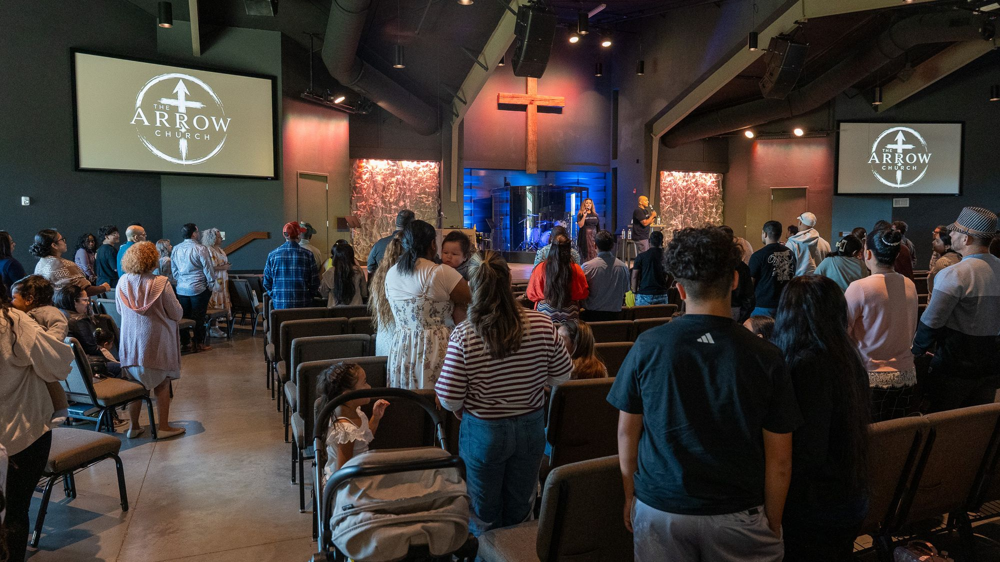

✳ JANESVILLE, WISCONSIN
A place to
belong.
Welcome to The Arrow Church Bilingual Ministry. Come find community, grow in faith, and worship with us.
THE ARROW CHURCH · JANESVILLE
✳ WELCOME HOME
Church can feel
like home.
Join us in Janesville for a worship experience and a community where you truly belong. Whether this is your first time at church or you’ve been coming for years, there’s a place for you here.
GET TO KNOW US ↗✳ WHAT TO EXPECT
Come as you are.
We mean it.
Real people, worship, and room to connect. Your first visit starts with a simple hello.
ONE CHURCH. TWO LANGUAGES.
Bring your whole self.
Our bilingual ministry gathers on Sundays and Fridays. Come with your family, bring a friend, or simply come as you are.
JOIN US THIS WEEK ↗✳ YOU'RE INVITED
Faith.
Family.
Forward.
There’s a place for every generation at The Arrow.
EXPLORE MINISTRIES ↗✳ FIND YOUR PEOPLE
A place for
every generation.
Discover the ministries and community waiting for you and your family.
✳ THE ARROW CHURCH ANYWHERE
Church goes
where you go.
Join our family online, wherever you are. The livestream begins Sundays at 12:30 PM Central.
WATCH LIVESTREAM ↗
✳ PLAN YOUR VISIT
See you
soon.
We can’t wait to meet you. Find us at 2931 Lucerne Dr in Janesville, Wisconsin.
GET DIRECTIONS ↗SERVICE TIMES / HORARIOS
2931 LUCERNE DR
JANESVILLE, WI 53545